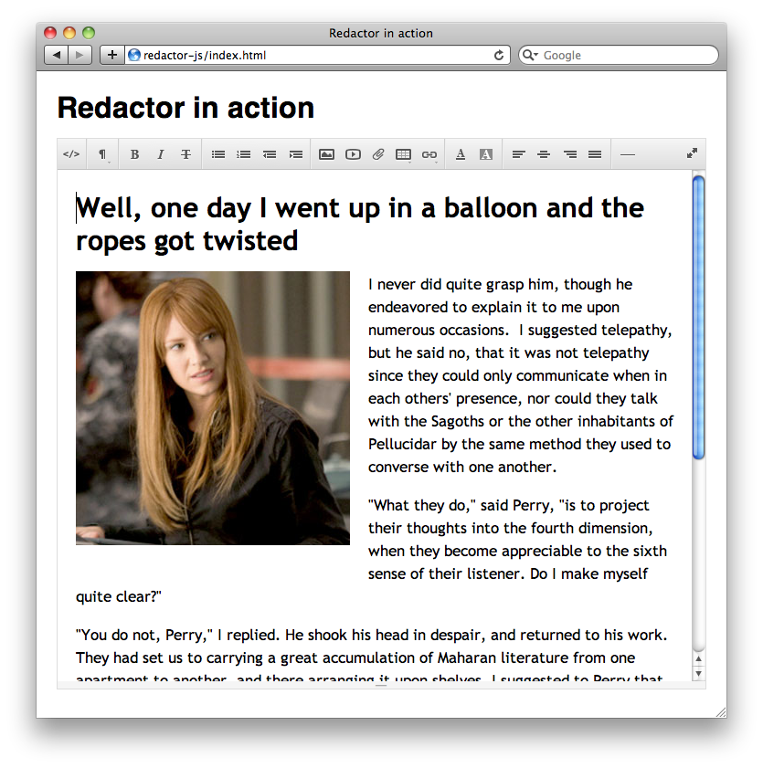

|
Nov 02, 2012
|
Redactor-js - это простой вайсвиг с возможностью загрузки изображений.
Как сочленить это с php можно прочитать из документации http://imperavi.com/redactor/docs/images/. Там же есть ссылка на пример с Django от Patrick Altman. Я же постараюсь описать как загружать картинки при помощи pyramid фреймворка, думаю переписать на что то другое не составит труда.
js функция redactor’а у меня выглядит вот так:
<!-- Redactor is here -->
<link rel="stylesheet" href="/static/redactor/redactor/redactor.css">
<script src="/static/redactor/redactor/redactor.js"></script>
<script type="text/javascript">
$(document).ready(
function()
{
$('#redactor_content').redactor({
imageUpload: '/image/upload',
imageGetJson: '/image/GetJson',
mobile: true
});
}
);
</script>
вьюха для загрузки изображений:
@view_config(route_name='upload_image', renderer='json')
def upload_image(request):
# путь к директории куда загружать картинку
path = request.registry.settings.get('redactor_images')
filename = str(time.time()) + request.POST['file'].filename
input_file = request.POST['file'].file
# Using the filename like this without cleaning it is very
# insecure so please keep that in mind when writing your own
# file handling.
file_path = os.path.join(path, filename)
output_file = open(file_path, 'wb')
# Finally write the data to the output file
input_file.seek(0)
while 1:
data = input_file.read(2 << 16)
if not data:
break
output_file.write(data)
output_file.close()
return {"filelink": "/static/uploaded/images/" + filename}
И вьюха для выбора изображений из уже загруженных:
@view_config(route_name='GetJson'), renderer='json')
def imageGetJson(request):
path = request.registry.settings.get('redactor_images')
types = ('*.jpg', '*.jpeg', '*.gif') # the tuple of file types
files_grabbed = []
for files in types:
files_grabbed.extend(glob.glob(path + "/" + files))
images = []
for file in files_grabbed:
file = file.replace(path, "")
images.append({"thumb": "/static/uploaded/images/" + file,
"image": "/static/uploaded/images/" + file,
"title": file, "folder": "images"})
return images
Пользуйтесь, хороший редактор.